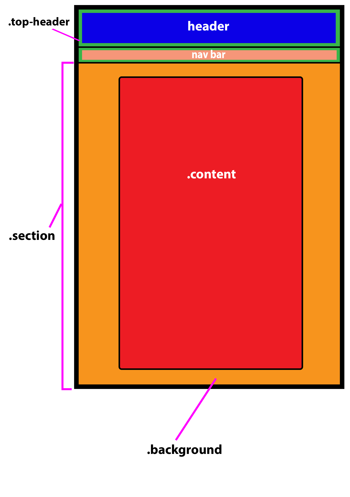
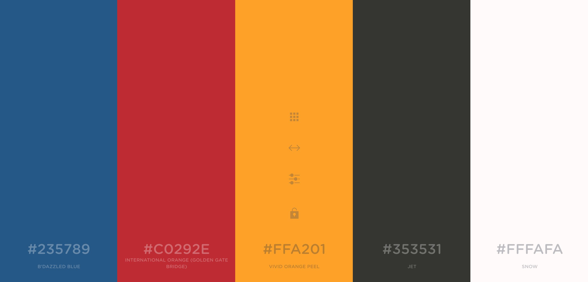

Comments
The main idea behind this website is a very simple navigating website with clean aesthetics. I started doing some research on website out there and found some nice concepts for a navigational bar and header with a very faint background image. I also wanted to use a photo that I had taken my self as a background which is very soft because of its transparency. And obviously wanted the content to pop, as for the jet black boarder and snow white background. Scalability was an important factor for me, the ability for the website to be viewed on any device, from TV to a smart phone, and still look beautiful. The website used a simple main structure which allowed me to create skeleton to ensure all pages use the same styling classes, making it easier for myself when it comes to debugging time.
Structural Layout
The structure for my website is as shown below.
Aesthetics ~ Colours
A website that you would like to be soft to the eyes requires colours that are compatible with each other. 'cooler.co' is a really good website which can generate a really nice colour palette. Knew I wanted blue in my website so I found a blue I loved (B'DAZZLED BLUE) and then generate a palette around that colour, found the orange, locked that in and generated around the now saved colours. I repeated this to get the red. You can see these colours used for body text, backgrounds, headings and the navigational bar at the top of the website. I also used Helvetics for the body (paragraph) text due to the lightweight feel and how easy on the eyes it is.
HTML and CSS Elements
Below is a table of the websites HTML and CSS classes and IDs
| Class or ID name | Description |
|---|---|
| .container | This is a wrapper div which had been used for code organisation. It is also used to set page sizes. |
| .background | This div was used to ensure the background sits behind all other object (thus the z-index. It was also used to make the background soft using the opacity feature with a grey background that was set in the body. |
| .imgBackground | This class was used for the image that is background which sets all the settings. |
| .top-header | This is a wrapper div which is used to ensure that the header and nav bar are positioned at the top of the page and always stays there. For future improvements it could be uses so it still sits at the top when you scroll through the content. |
| header | Header was uses to style the header, place an image behind the text and give the text some padding for aesthetic purposes. |
| .grid-container | I used CSS grid for the navigational bar as it is one of the easiest and simplest method of creating a scaleable table-like nav bar. grid-container is a CSS Grid class used to format the whole grid with the rows/colums, dimensions, and also the test placement within the grid. |
| .navLinks | This class is used to format the nav bar text. |
| .grid-item | This is a CSS grid class which is used for every item. This sets the colour of each grid space using this class as well as the padding. |
| .section | This is used as a wrapper for the contents but is also used to set the width of the white box where the content sits in. It also formats this box for the z-index, margins, position, border. It is also used in the @media rule to set the width of the section dependent on the size of the screen. |
| .content | This class is used for font formatting of h2, h3, p, ul. Is is then also used the give padding of the test from the border set in .section wrapper class. |
| .structure-pic | This class is used to format/position the picture for the HTML and page structure. |
| .colour-pic | This class is used to format/position the colour palette picture for the aesthetics section. |
| #t01 | This tag is used to format the table and its contents. |
| .italics | This is used in some span tags to put text in italics. |
| .validation | This class is for the W3 HTML and CSS checker tool. It provides padding of the items and positions them centre on the page. |
Validation
This website has undergone validation checks by W3C and passes HTML4.0.1 and CSS3 Strict.
Accessibility
A lot of considerations have been taken to ensure that this website is reader and useable by a range of demographics. Even as simple as classifying the language so that if the website is view by someone who reads in another language they can uses chromes built in translator to their native language. The simple contrasted colour and large buttons for the nav bar allow for website to be viewed easily and used by people with tactile issues. The webite had no flashing colours or animations which is to be conscience for people who maybe seizure prone. The text is also very simple and quite large allowing for an easy read.